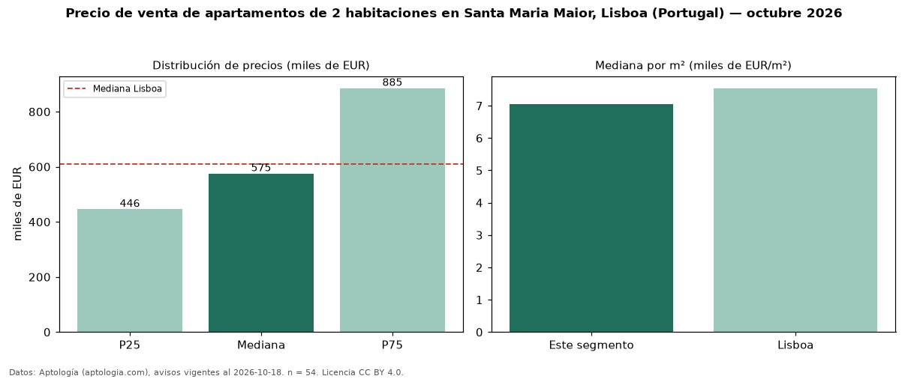

Precio de venta de apartamentos de 2 habitaciones en Santa Maria Maior, Lisboa (Portugal) — octubre 2026
En Santa Maria Maior, Lisboa (Portugal), la mediana de precio de venta de apartamentos de 2 habitaciones es EUR 575.000, según 54 avisos vigentes. Frente a la mediana de Lisboa para apartamentos de 2 habitaciones (EUR 610.000), queda 6 % por debajo. Por metro cuadrado, la mediana es EUR 7.049/m² (n = 54 avisos con área), 7 % por debajo de Lisboa (EUR 7.540/m²). Son 45 % de los 120 avisos de apartamentos en venta de la zona, cuya mediana general es EUR 575.000 (+0 %). El área mediana anunciada es 88 m². La mitad central de los avisos va de EUR 445.500 a EUR 885.000 (razón 2,0), una dispersión moderada. 9 % de los avisos con el dato declara parqueadero o cochera. Datos: Aptología (aptologia.com), CC BY 4.0 — https://www.aptologia.com/pt/venda/lisboa/santa-maria-maior. Archivos: PDF, CSV con las cifras y gráfica PNG.

| Avisos únicos | 54 |
|---|---|
| Percentil 25 | COP 445.500 |
| Mediana | COP 575.000 |
| Percentil 75 | COP 885.000 |
| Mediana por m² | COP 7.049 |
Fuente: avisos vigentes de portales inmobiliarios recopilados por Aptología, deduplicados (mínimo 30 avisos únicos por celda). Precios pedidos, no cerrados. Fecha: 2026-10-18.